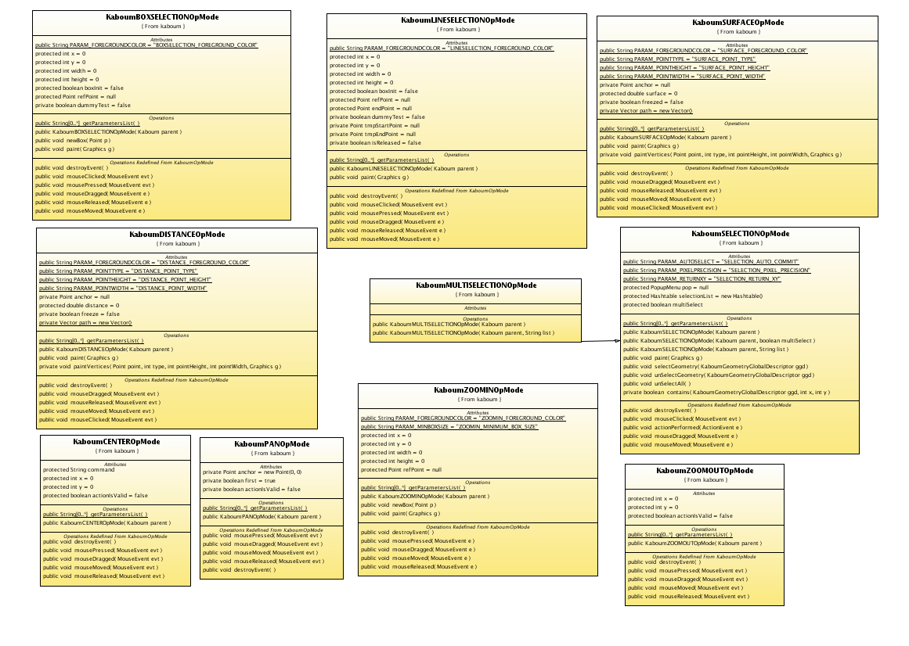

Kaboum
Le module Kaboum est un ensemble de deux applications packagées dans deux JAR. Le module se décompose en deux parties :
- La partie cliente Kaboum : composée d'une applet en charge de
la représentation cartographique et de la communication avec le moteur
cartographique,
- La partie serveur KaboumServer :en charge des
traitements géométriques et de l'accès aux données aux données
géographiques (accès direct ou API d'accès métier/spécifique a
implémenter).
Kaboum s'appuie sur les bibliothèques Java suivantes :
Applet client
Java package: org.kaboum
Kaboum est une applet de navigation et numérisation cartographique.
Elle offre une API Javascript surchargeable lui permettant d'àtre
pilotée à partir d'une page Web en utilisant la technologie
LiveConnect.
L'applet se compose deux grands ensembles : l'interface d'affichage et utilitaires associés et les opérateurs topologiques.
Noyau Kaboum
Classes parentes des opérateurs topologiques

Classes des opérateurs de navigation
Classes des opérateurs topologiques
Classes des utilitaires Kaboum
Module serveur
Java package: org.kaboum.server
Le module serveur est composé de :
- KaboumFeatureServlet : une servlet d'entrée recevant les
paramètres des actions exécutées sur le client et concernant des
éléments graphiques vectoriels,
- KaboumFeatureServer : un
module serveur procédant soit aux traitements topologiques, soit à
l'accès aux données pour lecture ou écriture,
- GeometryAccess : interface à implémenter pour l'accès aux données via un module métier.
Principales classes du module KaboumServer
Classe MapaeAccessGeometry
Cette classe présente les fonctions d'accès aux géométries.
fonctions:
- MapaeGeometryAccess()
Constructeur. Positionne le contexte de travail en regard du userData et de la configuration présente dans le fichier de propriétés kaboumProperties reàus.
| Paramètre |
Type |
Description |
Nullable |
| kaboumProperties |
java.util.Properties |
propriétés des classes affichées dans Kaboum
|
non
|
| userData |
org.kaboum.server.UserData
|
contenu libre positionnant le contexte de travail issu du javascript |
non |
- getGeometries()
Récupère les géométries contenues dans le mapExtent
et les stocke dans les classes spécifiées dans le fichier de propriété.
Cette fonction est mappée sur les fonctions d'accès aux géométries des
EJB relatifs.
| Paramètre |
Type |
Description |
Nullable |
| mapExtent |
com.vividsolutions.jts.Enveloppe |
extension spatiale de la carte
|
non |
| return |
java.util.Hashtable<String,Vector<Geometry>> |
collection de géométries trouvées
|
non |
- updateGeometries()
Mets à jour les géométries contenues dans la collection geometries dans la datasource correspondante. Cette fonction est mappée sur les fonctions de mise à jour des géométries des EJB relatifs.
| Paramètre |
Type |
Description |
Nullable |
| geometries |
java.util.Hashtable<String,Vector<Geometry>> |
géometries à mettre à jour
|
non |
| return |
java.util.Hashtable<String,Vector<Geometry>> |
géométries résultant de la mise à jour
|
non |
- addGeometries()
Ajoute les géométries contenues dans la collection geometries dans la datasource correspondante. Cette fonction est mappée sur les fonctions d'ajout de géométries des EJB relatifs.
| Paramètre |
Type |
Description |
Nullable |
| geometries |
java.util.Hashtable<String,Vector<Geometry>> |
géometries à ajouter
|
non |
return
|
java.util.Hashtable<String,Vector<Geometry>> |
géométries résultant de l'ajout
|
non |
- processGeometries()
Effectue des
taches métier spécifiques en regard du UserData reàu par le
constructeur de la classe sur les géométries contenues dans la
collection geometries. Cette fonction fait appel aux fonctions métier des EJB relatifs.
| Paramètre |
Type |
Description |
Nullable |
| geometries |
java.util.Hashtable<String,Vector<Geometry>> |
géometries à procéder
|
non |
return
|
java.util.Hashtable<String,Vector<Geometry>> |
géométries résultant de l'action effectuée
|
non
|
- removeGeometries()
Supprime les géométries contenues dans la collection geometries de la datasource correspondante. Cette fonction fait appel aux fonctions de suppression de géométries des EJB relatifs.
| Paramètre |
Type |
Description |
Nullable |
| geometries |
java.util.Hashtable<String,Vector<Geometry>> |
géometries à traiter
|
non |
|
| return |
short
|
code succès ou code échec de la suppression
|
non
|
|
API Javascript
L'API Javascript de Kaboum offre un ensemble de fonctions
permettant d'une part d'envoyer des ordres à l'applet et d'autre part
d'en recevoir le résultat. Les principales fonctions utilisées dans le
cadre de MAPAE sont les suivantes :
- kGeometry() : permet d'obtenir les informations sur une
géométrie définie. Les informations mises à disposition sont l'ID, le
périmètre, la surface et le tooltip de la géométrie.
- kProcessSelection()
: cette fonction est appelée sur chaque retour de validation d'une
géométrie suite à sa sélection, à sa création ou à sa modification.
Elle permet notamment d'obtenir l'ID de la géométrie concernée pour
faire le lien éventuels avec d'autres éléments de la page ou obtenir de
plus amples informations sur l'objet concerné (via kGeometry ou via un
appel AJAX au serveur).
- kProcessDistSurf() : permet d'afficher le résultat d'un mesurage dans un composant de la page ou un message d'alerte.
- kaboumCommand()
: permet d'envoyer un ordre à l'applet sans passer par les boutons de
commande. Les différents ordres sont détaillés dans le document d'API Javascript Kaboum.
Outils Client
L'interface client propose une liste d'outils permettant d'effectuer des actions de navigation ou de numérisation.
Outils de navigation :
| Intitulé |
Description |
Zoom avant
|
Zoom sur le rectangle tracé ou d'un facteur 2 centré sur le point cliqué
|
Zoom arrière
|
Zoom inverse d'un facteur 1/2 centré sur le point cliqué à concurrence de l'extension maximale autorisée sur la carte
|
| Déplacement |
Effectue une translation de la carte équivalente au déplacement de la souris
|
Vue précédente
|
Retour à l'extension spatiale précédente
|
Vue suivante
|
Passage à l'extension spatiale suivante
|
Vue initiale
|
Retour à l'extension spatiale maximale autorisée sur la carte
|
| Sélection |
Sélectionne les objets vectoriels cliqués
|
| Informations |
Requàte spatiale ponctuelle
|
Mesurage de distance
|
Mesurage de la distance dans les unités paramétrées dans l'applet
|
Mesurage de surface
|
Mesurage de la surface dans les unités paramétrées dans l'applet |
Outils de numérisation :
| Intitulé |
Description |
Numérisation de point
|
Création/Modification d'un nouveau point ou d'un multipoint
|
Numérisation de ligne
|
Création/Modification d'une nouvelle ligne ou multiligne |
Numérisation de polygone
|
Création/Modification d'un nouveau polygone ou multipolygone |
Union de polygones
|
Union de polygones (intègre un polygone sélectionné dans le polygone ciblé)
|
Complètement de polygone
|
Ajout d'une extension polygonale à un polygone existant aligné sur les polygones existants participant à la topologie
|
Remplissage de trous
|
Complètement de polygones uniquement dans les trous du polygone désigné
|
Gommage de polygone
|
Retire le résultat de l'intersection du polygone dessiné et du polygone désigné du polygone désigné
|
Découpage de polygones
|
Scinde un polygone sur la base de l'intersection du polygone dessiné et du polygone désigné
|
Copie d'objets de couche à couche
|
Copie l'objet trouvé dans la couche de référence indiquée dans la liste des thèmes vers la couche de numérisation active.
|
Suppression de polygones
|
Supprime l'OBJET sélectionné. |
Suppression de la géométrie
|
Supprime la GéMEéTRIE de l'objet sélectionné.
|
Conditions de numérisation :
Les outils de numérisation sont soumis aux règles de "snapping" définies dans les spécifications.
Gestion de l'affichage des couches :
Un arbre liste les thèmes offre les fonctionnalités suivantes :
- une coche pour afficher/désafficher les thèmes (tous les thèmes).
- le nom du thème sans action particulière.
- un bouton radio pour désigner la couche de référence pour la copie d'objets (certains thèmes seulement).
Outils annexes :
- Outil de définition de l'échelle : zone de saisie permettant de fixer l'échelle au pixel de la carte près.
- Outil de suivi des coordonnées carte : affiche les coordonnées de la souris dans les unités de la carte.
- Outils de positionnement :
- Positionnement
sur une commune : offre la liste des commune. Sur sélection d'une
commune, la carte se positionne sur l'extension spatiale de celle-ci.
- Positionnement
sur un FLIK : zone de saisie d'un numéro FLIK. Suite à la saisie d'un
numéro, la carte se positionne sur l'extension spatiale de celui-ci.
- Positionnement
sur un exploitant : zone de saisie d'un numéro d'exploitant. Suite à la
saisie d'un numéro, la carte se positionne sur l'extension spatiale de
l'exploitation de l'exploitant désigné.
- Positionnement sur
un numéro agricole : zone de saisie d'un numéro de parcelle agricole de
l'exploitant saisi dans le composant précédent. Suite à la saisie d'un
numéro, la carte se positionne sur l'extension spatiale de la parcelle
correspondante.
Dynamique de mise en oeuvre
La dynamique de travail pour l'accès aux données et l'affichage des cartes suit la logique suivante :
Description du processus :
- Une action de l'utilisateur est effectuée sur la carte.
- Cette action est pilotée par le javascript qui le traduit en ordre applet et envoie.
- Si
nécessaire l'applet envoie une commande au module serveur via la
servlet KaboumFeatureServlet concernant les géométries vectorielles
stockées dans une "shuttle". Cet ordre peut àtre de différentes natures
: soit il s'agit d'une demande d'action topologique auquel cas l'ordre
est traité sur le module serveur et retourne immédiatement le résultat
de l'opération à l'applet, soit il s'agit d'un ordre de récupération,
modification, suppression ou ajout d'une géométrie et dans ce cas le
processus ce déroule sur les points 4 à 11
- La servlet appelle la méthode de la GeometryAccess concernant l'action désirée.
- La GeometryAccess récupère les paramètres de configuration des datasources.
- La
GeometryAccess construit les objets métier à partir des informations
reàues fait appel aux Ejb métier pour effectuer les actions demandées.
- L'Ejb métier fait appel au manager des objets métier.
- Les
managers effectuent les taches métier spécifiques dans la source de
données et récupèrent le résultat qu'elles stockent en retour dans des
objets à renvoyer vers le client.
- Retour des objets via les Ejb métier.
- Retour
dans la GeometryAccess qui traduit les objets métier en objets
graphiques pour Kaboum sur la base d'un attribut géométrique (WKT, WKB,
Geometrie JTS, ...).
- Injection des objets dans la shuttle de réponse pour Kaboum et renvoi de la shuttle au client.
- Parallèlement
au flux précédent et à partir du point 3, Kaboum envoie si nécessaire
un ordre de récupération de l'image de la carte à une servlet de proxy
sur à l'extension spatiale courante.
- La servlet traduit la requàte en requàte Mapserver et procède à l'appel.
- Le serveur renvoie l'image correspondante.
- L'image est retournée à Kaboum qui la dessine.
- En
retour de ces traitements, Kaboum retourne le résultat à la fonction
javascript kaboumResult qui l'interprète et appelle si nécessaire l'une
des fonctions publique correspondant au type d'action effectuée.